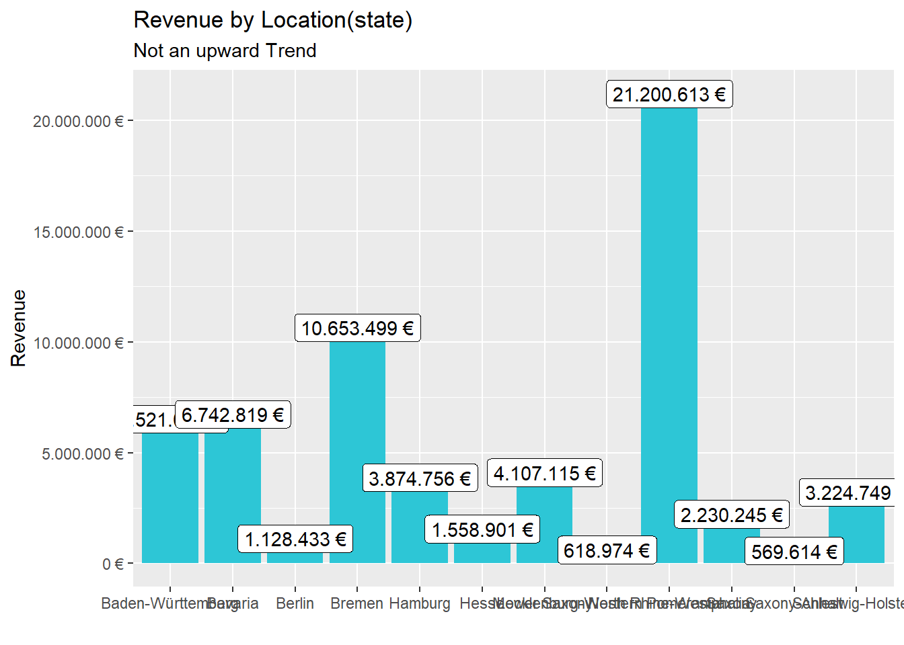

Last compiled: 2020-12-08
library(tidyverse) # library(tibble) –> is a modern re-imagining of the data frame # library(readr) –> provides a fast and friendly way to read rectangular data like csv # library(dplyr) –> provides a grammar of data manipulation # library(magrittr) –> offers a set of operators which make your code more readable (pipe operator) # library(tidyr) –> provides a set of functions that help you get to tidy data # library(stringr) –> provides a cohesive set of functions designed to make working with strings as easy as possible # library(ggplot2) –> graphics
library(readxl) # 2.0 Importing Files —- # A good convention is to use the file name and suffix it with tbl for the data structure tibble bikes_tbl <- read_excel(path = “00_data/01_bike_sales/01_raw_data/bikes.xlsx”) orderlines_tbl <- read_excel(“00_data/01_bike_sales/01_raw_data/orderlines.xlsx”)
bikeshops_tbl <- read_excel(“00_data/01_bike_sales/01_raw_data/bikeshops.xlsx”)
bikeshops_tbl glimpse(bikeshops_tbl) # 4.0 Joining Data —- left_join(orderlines_tbl, bikes_tbl) left_join(orderlines_tbl, bikes_tbl, by = c(“product.id” = “bike.id”)) bike_orderlines_joined_tbl <- orderlines_tbl %>% left_join(bikes_tbl, by = c(“product.id” = “bike.id”)) %>% left_join(bikeshops_tbl, by = c(“customer.id” = “bikeshop.id”)) bike_orderlines_joined_tbl %>% glimpse() # 5.0 Wrangling Data —- # All actions are chained with the pipe already. You can perform each step separately and use glimpse() or View() to validate your code. Store the result in a variable at the end of the steps. bike_orderlines_wrangled_tbl <- bike_orderlines_joined_tbl %>% # 5.1 Separate category name separate(col = location, into = c(“city”, “state”), sep = “,”) %>%
# 5.2 Add the total price (price * quantity) # Add a column to a tibble that uses a formula-style calculation of other columns mutate(total.price = price * quantity) %>%
# 5.3 Optional: Reorganize. Using select to grab or remove unnecessary columns # 5.3.1 by exact column name select(-…1, -gender) %>%
# 5.3.2 by a pattern # You can use the select_helpers to define patterns. # Type ?ends_with and click on Select helpers in the documentation select(-ends_with(“.id”)) %>%
# 5.3.3 Actually we need the column “order.id”. Let’s bind it back to the data bind_cols(bike_orderlines_joined_tbl %>% select(order.id)) %>%
# 5.3.4 You can reorder the data by selecting the columns in your desired order. # You can use select_helpers like contains() or everything() select(order.id, contains(“order”), contains(“model”), contains(“category”), price, quantity, total.price, everything()) %>%
# 5.4 Rename columns because we actually wanted underscores instead of the dots # (one at the time vs. multiple at once) rename(bikeshop = name) %>% set_names(names(.) %>% str_replace_all(“\.”, "_"))
library(lubridate) # Step 1 - Manipulate sales_by_location_tbl <- bike_orderlines_wrangled_tbl %>%
# Select columns select(state, total_price) %>%
# Add year column #no need mutate(year = year(order_date)) %>%
# Grouping by state and summarizing sales group_by(state) %>% summarize(sales = sum(total_price)) %>%
# Optional: Add a column that turns the numbers into a currency format # (makes it in the plot optically more appealing) # mutate(sales_text = scales::dollar(sales)) <- Works for dollar values mutate(sales_text = scales::dollar(sales, big.mark = “.”, decimal.mark = “,”, prefix = "“, suffix =” €"))
sales_by_location_tbl
sales_by_location_tbl %>%
# Setup canvas with the columns location (x-axis) and sales (y-axis) ggplot(aes(x = state, y = sales)) +
# Geometries geom_col(fill = “#2DC6D6”) + # Use geom_col for a bar plot geom_label(aes(label = sales_text)) + # Adding labels to the bars geom_smooth(method = “lm”, se = FALSE) + # Adding a trendline
# Formatting # scale_y_continuous(labels = scales::dollar) + # Change the y-axis. # Again, we have to adjust it for euro values scale_y_continuous(labels = scales::dollar_format(big.mark = “.”, decimal.mark = “,”, prefix = "“, suffix =” €“)) + labs( title =”Revenue by Location(state)“, subtitle =”Not an upward Trend“, x =”“, # Override defaults for x and y y =”Revenue" ) theme(axis.text.x = element_text(angle = 45, hjust = 1))
sales_by_loc_year_tbl <- bike_orderlines_wrangled_tbl %>%
# Select columns and add a year select(order_date, total_price, state) %>% mutate(year = year(order_date)) %>%
# Group by and summarize year and main catgegory group_by(year, state) %>% summarise(sales = sum(total_price)) %>% ungroup() %>%
# Format $ Text mutate(sales_text = scales::dollar(sales, big.mark = “.”, decimal.mark = “,”, prefix = "“, suffix =” €"))
sales_by_loc_year_tbl
# Step 2 - Visualize sales_by_loc_year_tbl %>%
# Set up x, y, fill ggplot(aes(x = year, y = sales, fill = state)) +
# Geometries geom_col() + # Run up to here to get a stacked bar plot
# Facet facet_wrap(~ state) +
# Formatting scale_y_continuous(labels = scales::dollar_format(big.mark = “.”, decimal.mark = “,”, prefix = "“, suffix =” €“)) + labs( title =”Revenue by year and location“, subtitle =”Each location has an upward trend“, fill =”Main Location" # Changes the legend name )
You can add more headers by adding more hashtags. These won’t be put into the table of contents
Here’s an even lower level header
Last compiled: 2020-12-08
I’m writing this tutorial going from the top down. And, this is how it will be printed. So, notice the second post is second in the list. If you want your most recent post to be at the top, then make a new post starting at the top. If you want the oldest first, do, then keep adding to the bottom
So far this is just a blog where you can write in plain text and serve your writing to a webpage. One of the main purposes of this lab journal is to record your progress learning R. The reason I am asking you to use this process is because you can both make a website, and a lab journal, and learn R all in R-studio. This makes everything really convenient and in the same place.
So, let’s say you are learning how to make a histogram in R. For example, maybe you want to sample 100 numbers from a normal distribution with mean = 0, and standard deviation = 1, and then you want to plot a histogram. You can do this right here by using an r code block, like this:
samples <- rnorm(100, mean=0, sd=1)
hist(samples)
When you knit this R Markdown document, you will see that the histogram is printed to the page, along with the R code. This document can be set up to hide the R code in the webpage, just delete the comment (hashtag) from the cold folding option in the yaml header up top. For purposes of letting yourself see the code, and me see the code, best to keep it the way that it is. You’ll learn that all of these things and more can be customized in each R code block.